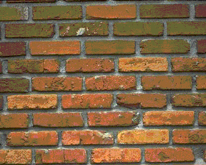
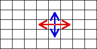

| A shape exhibits translational symmetry if displacement in some direction - horizontal or vertical, for example - returns the shape to (approximately) its original configuration. |
| A brick wall is a familiar example. Click here for a horizontal translation; click here to repeat. |
|  |
| Here is a schematic of rotation. |
|  |